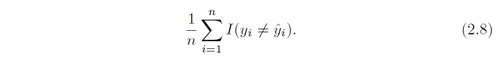
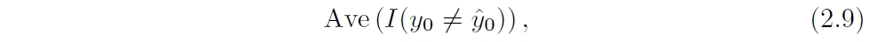
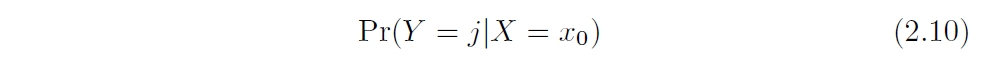
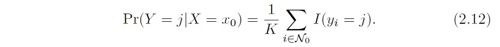

上式中，I函数意味着，如果括号内为真则值为1，为假，则值为0
所以，如果全部判断正确，上式为1，全部判断错误，上式为0。
一般的拟合介于1和0之间。
前面说过，我们的目的是降低测试集的错误率：

贝叶斯分类
我们可以定义将X判断为Y=j的概率为：

如果上式大于0.5，就分类为1，反之小于0.5就分类为2

贝叶斯分类是由上图中贝叶斯决策边界（虚线）决定的。
在这条线上，橙色和蓝色区域的概率都是0.5。
K-Nearest Neighbors

给定一个测试点x0，和一个K， KNN先选中训练集中最接近x0
的K个点，用N0代替。然后判断属于j类的平均概率。
最终，KNN应用贝叶斯定理，将x0归类为概率最大的类。
K的选取对拟合的bias和variance影响很大，我们可以看下图：

、 K=1灵活性很高，K=100严格性很高。
随K的变化，不出意料的我们可以看出在训练集和测试集中错误率的变化曲线：

可以看出，和前面regression的情况很相似。